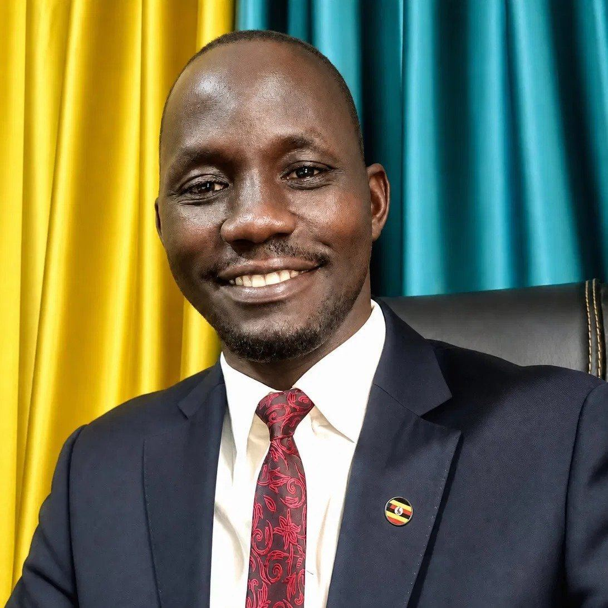

Founder and Team Leader
Banio Luiji Nobert
Leadership coach, team building facilitator, conference speaker and author, serving organisations and young people across Uganda and Africa.

About Banio
Who is Banio Luiji Nobert?
In short. Banio Luiji Nobert is a Ugandan leadership coach, team building facilitator, corporate trainer, conference speaker and author of twelve books. He is the founder and team leader of Potential Unexplored Ltd, a consultancy serving organisations across Uganda and Africa, and the founder of the Boys to Men Mentorship Camp.
Banio believes that young people and organisations carry immense potential, and that it must be discovered, developed and deployed if real progress is to be seen. That conviction runs through all his work, from boardrooms and staff retreats to holiday camps for teenage boys.
With his team, he has facilitated more than 130 training, coaching and mentorship sessions over the last five years for institutions across Uganda and Africa, for international NGOs, UN agencies, banks, universities, companies and faith based organisations. His work is known for being participatory, practical and full of energy, and for creating a room where people feel safe enough to be honest.
Career
From farmers' fields to leadership rooms
Banio began his career working directly with farmers, then served as Head of Agriculture and Economic Empowerment at Caritas Archdiocese of Tororo, where he coordinated an ERI project and first trained communities in the ERI Approach. He went on to work with UNADA in the West Nile region as a regional programme officer under the DANIDA funded DAR Programme, supporting agro-input dealers.
From 2018 to 2022 he was the ERI East Africa Programme Coordinator at horizont3000, coordinating the Enabling Rural Innovation programme across six organisations for five years and representing the funding organisation to its implementing partners. Having worked on both the implementing and the funding side, he understands development work from both ends.
In 2022 he founded Capacity Beyond Ltd, which he later renamed Potential Unexplored Ltd, a Ugandan organisational strengthening and life readiness consultancy. He also founded the Boys to Men Mentorship Camp, a residential mentorship camp for boys and young men aged 8 to 23.
- Founder and Team Leader, Potential Unexplored Ltd (formerly Capacity Beyond Ltd), 2022 to date
- Founder and Lead Mentor, Boys to Men Mentorship Camp
- ERI East Africa Programme Coordinator, horizont3000, 2018 to 2022
- Head of Agriculture and Economic Empowerment, Caritas Archdiocese of Tororo
- Regional Programme Officer, UNADA, West Nile region
- Master Trainer, ERI Approach, and Master Trainer, Gender Action Learning System (GALS)
- MSc Agroecology, Uganda Martyrs University, and BSc Agriculture, Gulu University
What Banio does
Areas of work
Team building
Participatory team building events and staff retreats that surface and address the real state of a team. Read more.
Leadership coaching and development
Workshops, retreats and longer programmes with one to one coaching, starting with self-leadership. Read more.
Sales and customer service
Training built on understanding people first and techniques second. Read more.
Life readiness for young people
The Boys to Men Mentorship Camp, the Girls Life Readiness Camp and school support. Visit the camp.
Adult personal growth
The MEP Masterclass on mindset, entrepreneurship and personal growth. Read more.
Training of trainers
Training NGO staff in life readiness, the ERI Approach and the GALS Methodology.
Speaking
Conference and keynote speaking
Banio speaks at conferences, staff events, graduations, church and youth gatherings across Uganda and Africa. Recent engagements include presenting on youth in agriculture and entrepreneurship at the ERI Annual Symposium 2026 in Kampala. Popular topics include:
- Self-leadership first, then people leadership
- Building trusting teams
- Accountability that actually works in teams
- Why change is difficult, and how to lead people through it
- Selling and serving by understanding people
- Healing to lead, emotional wounds and leadership
- Youth, agriculture and entrepreneurship
- Raising boys of today into men of tomorrow
Frameworks
Tools Banio has developed
These practical frameworks run through his training, coaching and books.
- CIVEC Trust Framework. Competence, Integrity, Vulnerability, Empathy and Consistency, the five ingredients of trust in a team.
- 6R Coaching Conversation Framework. Rapport, Reality, Risk, Reach, Routes and Resolve.
- Team Accountability Compass. Seven directions of accountability in a team.
- Progress Triangle. Personal Mastery, People Mastery and Practical Mastery.
- The Real Life Chain. Environment shapes the mind, the mind drives actions, and actions produce results.
- Value-Reward Ladder. How value grows from skill to trust, reputation and legacy.
Books
Twelve books by Banio Luiji Nobert
On leadership, teams, healing, accountability, sales and raising young people.
- Leadership Lessons from Jesus
- Market and Sell Like Jesus Did
- Heal to Lead
- Achieving the 7 Levels of Accountability in a Team
- Building Trusting Teams
- The Real World
- Boys to Men: Letters to an African King
- Real African Kings: Raising Boys of Today into Men of Tomorrow
- Facilitation Skills
- Emotional Wounds That Never Left
- Jerry and Tinah: The Rich Kids
- Why Change Is Difficult and How to Force It
Organisations served
Consultancy across Uganda and Africa
Banio and his team have facilitated, coached and consulted for organisations including UNHCR, Bank of Uganda, Centenary Bank, the Mastercard Foundation Scholars Program, horizont3000, War Child Canada, CORDAID South Sudan, Opportunity International, Gulu University, Uganda Christian University, KCB, YOPSA, GEPA South Sudan, DKA Austria, Search for Common Ground South Sudan, African Women Rising, SOS Children's Villages Uganda, the Danish Refugee Council and NASHO Computers.
Voices
What people say about Banio
"He creates a room where people feel safe enough to be honest, which is where real change begins."
Solomon Mbubi
Regional Director, horizont3000 East Africa
"We left with a simple, clear picture of how we work best as a group, and we have seen real improvement in how we communicate and work together since then. We still talk about some of those lessons in our meetings today."
Laker Winfred
Branch Manager, Centenary Bank Paidha
"From the very start, right through the day, people were connecting and learning together, about trust, about accountability, about leadership. It was remarkable how much was achieved in just one day. We later asked Banio to design a longer programme, and we are still in it."
Thomas Malunda
Opportunity International
Questions
Frequently asked questions
Banio Luiji Nobert is a Ugandan leadership coach, team building facilitator, corporate trainer, conference speaker and author of twelve books. He is the founder and team leader of Potential Unexplored Ltd, a consultancy serving organisations across Uganda and Africa, and the founder of the Boys to Men Mentorship Camp.
He speaks and trains on leadership and self-leadership, team building and trust, accountability, sales and customer service, mindset and personal growth, youth in agriculture and entrepreneurship, and raising boys and girls ready for adult life.
Call or WhatsApp +256 775 495 431, email info@potentialunexplored.com, or request a proposal through the Potential Unexplored website.
Find Banio online
LinkedIn | Facebook | Instagram | TikTok | X
Phone and WhatsApp +256 775 495 431 | info@potentialunexplored.com